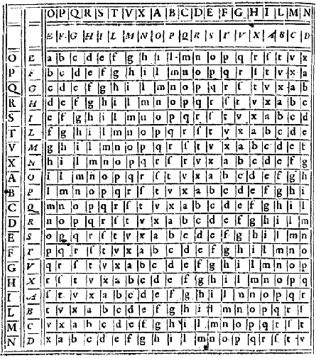

Le chiffre de Vigenère
Même si l'on connaissait depuis fort longtemps les faiblesses de la cryptographie par substitution, et malgré les essais notamment d'Alberti, de Porta et de Trithème, il n'y eut pas entre César et le XVI è s. de véritable nouveau procédé cryptographique, à la fois sûr (pour les moyens de l'époque) et facile à utiliser! Blaise de Vigenère, né en 1523, fut l'initiateur d'une nouvelle façon de chiffrer les messages qui mit en échec les cryptanalystes trois siècles durant. Vigenère était un personnage à multiples facettes, tantôt alchimiste, écrivain, historien, il était aussi diplomate au service des ducs de Nevers et des rois de France. C'est en 1586 qu'il publie son Traicté des chiffres ou Secrètes manières d'écrire, qui explique son nouveau chiffre (le texte intégral est disponible sur le site de la Bibliothèque Nationale de France).
L'idée de Vigenère est d'utiliser un chiffre de César,
mais où le décalage utilisé change de lettres en lettres.
Pour cela, on utilise une table composée de 26 alphabets, écrits dans l'ordre, mais décalés de ligne en ligne d'un caractère.
On écrit encore en haut un alphabet complet, pour la clé, et à gauche, verticalement, un dernier alphabet, pour le texte à coder :

Pour coder un message, on choisit une clé qui sera un mot de longueur arbitraire. On écrit ensuite cette clé sous le message à coder, en la répétant aussi souvent que nécessaire pour que sous chaque lettre du message à coder, on trouve une lettre de la clé. Pour coder, on regarde dans le tableau l'intersection de la ligne de la lettre à coder avec la colonne de la lettre de la clé.
Exemple : On veut coder le texte "CRYPTOGRAPHIE" avec la clé "MATHWEB". On commence par écrire la clef sous le texte à coder :
| C | R | Y | P | T | O | G | R | A | P | H | I | E |
| M | A | T | H | W | E | B | M | A | T | H | W | E |
Pour coder la lettre C, la clé est donnée par la lettre M. On regarde dans le tableau l'intersection de la ligne donnée par le C de la première colonne (en vert), et de la colonne donnée par le M de la première ligne (en violet).
 On trouve O. Puis on continue. Sous le R on trouve le A. La lettre dans le tableau correspondant au R dans la colonne A est R.
On remplace donc le R par lui-même. Pour le Y, la lettre de la clé est T. Dans la colonne T, le Y est remplacé par R. On continue ainsi et
on trouve finalement le message chiffré : ORRWPSHDAIOEI.
On trouve O. Puis on continue. Sous le R on trouve le A. La lettre dans le tableau correspondant au R dans la colonne A est R.
On remplace donc le R par lui-même. Pour le Y, la lettre de la clé est T. Dans la colonne T, le Y est remplacé par R. On continue ainsi et
on trouve finalement le message chiffré : ORRWPSHDAIOEI.
Cet algorithme de cryptographie comporte beaucoup de points forts. Il est très facile d'utilisation, et le déchiffrement est tout aussi facile si on connait la clé. Il suffit, sur la colonne de la lettre de la clé, de rechercher la lettre du message codé. A l'extrémité gauche de la ligne, on trouve la lettre du texte clair. Vous pouvez vous entrainer avec le message codé TYQFLJ, qu'on a codé avec la clé EKETHR.
En outre, l'exemple précédent fait bien apparaitre la grande caractéristique du code de Vigenère : la lettre E a été chiffrée en R, puis en M, la lettre P en W puis en I. Impossible par une analyse statistique simple de retrouver les lettres les plus courantes. Dernière chose, on peut produire une infinité de clés et il est très facile de convenir avec quelqu'un d'une clé donnée. Il résista aux travaux des cryptanalystes jusqu'au XIXè siècle. Pourtant, à quelques exceptions près, comme par exemple dans la correspondance de Marie-Antoinette, ce chiffre, et plus généralement les chiffres polyalphabétiques, furent peu utilisés. On leur préférait les codes à répertoires.
On lit souvent, sur internet, des affimations péremptoires comme celle-ci concernant le chiffre de Vigenère : "Il a laissé son nom au chiffrement de Vigenère dont la paternité revient à Giovan Battista Bellaso, mais qui lui a été faussement attribuée au xixe siècle." Qu'en-est-il vraiment? Ce qui est sûr, c'est que Blaise de Vigenère n'a pas inventé la première méthode de cryptographie par substitution polyalphabétique (l'alphabet change pour chaque lettre) utilisant une clé. C'est bien à Bellaso qu'on doit cette idée, dans son livre La Cifra del Sig. Giovan Battista Bellaso publié en 1553. D'ailleurs, Vigenère, qui voyagea beaucoup, notamment en Italie, connaissait vraisemblablement cet ouvrage.
En revanche, Vigenère a réussi la synthèse de la méthode de Bellaso (copiée par Porta) avec l'utilisation d'un tableau carré comme le suggérait Trithème. La méthode décrite précédemment est donc bien l'oeuvre de Vigenère, même si elle n'est qu'une modification (pour une utilisation plus facile) du chiffre de Bellaso. Même, en réalité, la méthode décrite par Vigenère est un peu différente. Il garde le tableau central mais s'autorise, pour les alphabets au-dessus et à gauche, de commencer par une autre lettre que A. Ainsi, le tableau que l'on trouve en exemple dans son livre est le suivant :
 Et voici comment Vigenère explique son chiffre :S'il n'a pas inventé la cryptographie par substitution polyalphabétique, Vigenère a tout de même, dans cet ouvrage Traicté des chiffres ou Secrètes manières d'écrire, réalisé une percée majeure : il est le premier à proposer un procédé autoclave, c'est-à-dire où la clé de chiffrement utilise le texte clair.